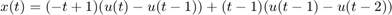
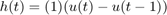
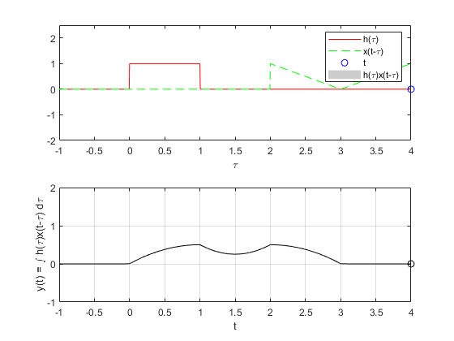
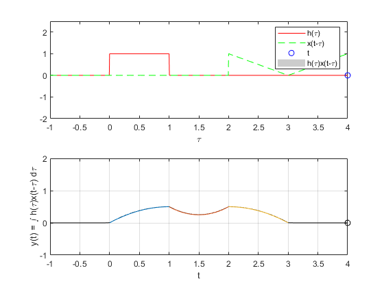
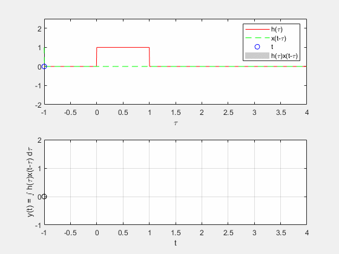
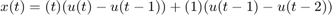
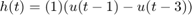
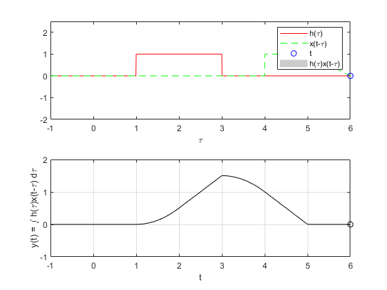
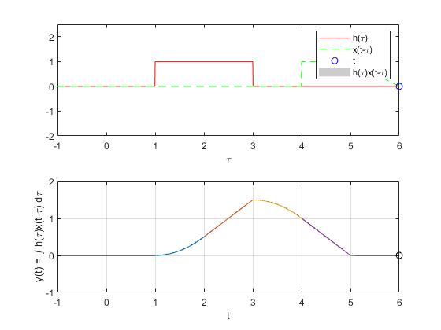

Práctica 4: Convolución y Correlación de señales en tiempo continuo
Autores:
- Argaez Herrera Antonia Margarita
- Leguizamo Lara Daniela Denisse
- Rojas Solis Juan Carlos
Grupo: 2TV1
Profesor:
Dr. Rafael Martínez Martínez
Contents
Objetivos
- Conocer métodos básicos de integración numérica
- Manipulación de instrucciones en MATLAB
- Simular convoluciones y correlaciones de señales continuas
Introducción
¿Qué es MATLAB?
MATLAB (abreviatura de MATrix LABoratory, «laboratorio de matrices») es un sistema de cómputo numérico que ofrece un entorno de desarrollo integrado (IDE) con un lenguaje de programación propio (lenguaje M). Está disponible para las plataformas Unix, Windows, Mac OS X y GNU/Linux.
Entre sus prestaciones básicas se hallan la manipulación de matrices, la representación de datos y funciones, la implementación de algoritmos, la creación de interfaces de usuario (GUI) y la comunicación con programas en otros lenguajes y con otros dispositivos hardware. El paquete MATLAB dispone de dos herramientas adicionales que expanden sus prestaciones, a saber, Simulink (plataforma de simulación multidominio) y GUIDE (editor de interfaces de usuario - GUI). Además, se pueden ampliar las capacidades de MATLAB con las cajas de herramientas (toolboxes); y las de Simulink con los paquetes de bloques (blocksets).
Es un software muy usado en universidades y centros de investigación y desarrollo. En los últimos años ha aumentado el número de prestaciones, como la de programar directamente procesadores digitales de señal o crear código VHDL.
En 2004, se estimaba que MATLAB era empleado por más de un millón de personas en ámbitos académicos y empresariales. [1]
Desarrollo
Para el desarrollo se tienen que resolver cada uno de los siguientes problemas comenzando una nueva sección (para la publicación) en cada uno de ellos.
Para cada problema se tendrán que hacer las modíficaciones necesarias al código de ejemplo, convendría entonces pensar en realizar una modificación general de tal manera que el programa funcione para cualesquiera dos funciones, pero esto es opcional.
Problema 1
Para el PR04 reporte la grafica de la simulación númerica de la convolución y compare con el resultado analítico que obtuvo para el problema 1, esto es, su práctica tendrá que incluir una llamada a la función convconm y posteriormente se tendrá que mostrar (mediante el Publish) la gráfica tanto de las señales involucradas como el resultado de la convolución, y en esta última gráficara su resultado analitico, se tendrá que incluir el resultado analitico. Investigue como crear un gif e inserte la animación.
Se va a realizar la convolución de las siguientes señales:


clear all; close all; x = @(t) (-t+1).*(t>=0 & t<=1) + (t-1).*(t>=1 & t<=2); h = @(t) (1).*(t>=0 & t<=1); a=-1; b=4; nombregif= 'problema1.gif'; convconm(x,h,a,b,nombregif) %El codigo de esta función se encuentra en el apéndice

figure(1);
problema1(); %El codigo de esta funcion se encuentra en el apéndice
 
Problema 2
Para el PR04 reporte la grafica de la simulación númerica de la convolución y compare con el resultado analítico que obtuvo para el problema 3, esto es, su práctica tendrá que incluir una llamada a la funciónn convconm y posteriormente se tendrá que mostrar (mediante el Publish) la gráfica tanto de las señales involucradas como el resultado de la convolución, y en esta última gráficara su resultado analitico, se tendrá que incluir el resultado analitico. Investigue como crear un gif e inserte la animación.
Se va a realizar la convolución de las siguientes señales:


clear all; close all; x = @(t) (t).*(t>=0 & t<=1) + (1).*(t>1 & t<=2); h = @(t) (1).*(t>=1 & t<=3); a=-1; b=6; nombregif= 'problema2.gif'; convconm(x,h,a,b,nombregif) %%El codigo de esta función se encuentra en el apéndice

figure(1);
problema2(); %El codigo de esta funcion se encuentra en el apéndice
 
Problema 3
Para el PR06 reporte la grafica de la simulación númerica de la correlación y compare con el resultado analítico que obtuvo para el problema e), esto es, su práctica tendrá que incluir una llamada a la funciónn convconm y posteriormente se tendrá que mostrar (mediante el Publish) la gráfica tanto de las señales involucradas como el resultado de su correlación, y en esta última graficara su resultado analitico, se tendrá que incluir el resultado analitico. Investigue como crear un gif e inserte la animación.
Problema 4
Para el PR06 reporte la grafica de la simulación númerica de la correlación y compare con el resultado analítico que obtuvo para el problema f), esto es, su práctica tendrá que incluir una llamada a la funciónn convconm y posteriormente se tendrá que mostrar (mediante el Publish) la gráfica tanto de las señales involucradas como el resultado de su correlación, y en esta última graficara su resultado analitico, se tendrá que incluir el resultado analitico. Investigue como crear un gif e inserte la animación.
Referencias
[1] https://la.mathworks.com/matlabcentral/answers/94495-how-can-i-create-animated-gif-images-in-matlab
[2] https://latex2png.com/
[3] https://www.quora.com/How-do-I-add-a-GIF-image-using-HTML-code
Apendice
A continuación se muestran los codigos de la funcion convconm, de la funcion problema1 y de la funcion problema2 respectivamente:
Codigo de la funcion convconm
function convconm(x,h,a,b,nombregif) filename = nombregif; v = figure (1); % Se crea una figura para hacer las gráficas axis tight manual % esto asegura que getframe() retorne un tamaño consistente dtau = 0.005; % Base de los rectangulos para realizar la integral tau = a:dtau:b; % Intervalo de visualización del resultado ti = 0; % Indice para el vector de resultados tvec = a:0.1:b; % traslaciones de t, cuantas integrales se calulan y = NaN*zeros(1, length (tvec)); % Resultados de acuerdo a cuantos t for t = tvec, % Cantidad de traslaciones ti = ti+1; % Indice para guardar el resultado (indice del tiempo) xh = x(t-tau).*h(tau); % resultado de la multiplicación lxh = length(xh); % longitud del resultado y(ti) = sum(xh.*dtau); % Base por altura, aproximación de la integral subplot (2,1,1), % gráfica de 2 x 1 (primera) plot(tau, h(tau), 'r-', tau, x(t-tau), 'g--', t, 0, 'ob'); %graficas axis ([tau(1) tau(end) -2.0 2.5]); % límites de los ejes patch([tau(1:end-1); tau(1:end-1); tau(2:end); tau(2:end)],... [zeros(1,lxh-1);xh(1:end-1);xh(2:end);zeros(1,lxh-1)],... [.8 .8 .8], 'edgecolor', 'none'); xlabel('\tau'); % Texto del eje X legend('h(\tau)', 'x(t-\tau)','t','h(\tau)x(t-\tau)')% Caja de Texto subplot (2, 1, 2) % gráfica de 2 x 1 (segunda) plot (tvec, y, 'k', tvec (ti), y(ti), 'ok'); xlabel ('t'); ylabel ('y(t) = \int h(\tau)x(t-\tau) d\tau'); axis ([tau(1) tau(end) -1.0 2.0]); % límites del eje grid; % malla drawnow; % efecto de movimiento continuo
% Captura la grafica como una imagen
frame = getframe(v);
im = frame2im(frame);
[imind,cm] = rgb2ind(im,256);
% Write to the GIF File
if t == a
imwrite(imind,cm,filename,'gif', 'Loopcount',inf);
else
imwrite(imind,cm,filename,'gif','WriteMode','append');
end
end
endCodigo de la funcion problema1
function problema1() hold on syms t t1=0:0.01:1; t2=1:0.01:2; t3=2:0.01:3; subplot (2, 1, 2) plot(t1,(-t1.^2/2) + t1) hold on plot(t2,t2.^2 -3*t2 + 5/2) plot(t3,-t3.^2/2 + 2*t3 -3/2) grid on end
Codigo de la funcion problema2
function problema2() hold on syms t t1=1:0.01:2; t2=2:0.01:3; t3=3:0.01:4; t4=4:0.01:5; subplot (2, 1, 2) plot(t1,t1.^2/2 -t1 + 1/2) hold on plot(t2,t2-3/2) plot(t3,-t3.^2/2+3*t3-3) plot(t4,-t4+5) grid on end